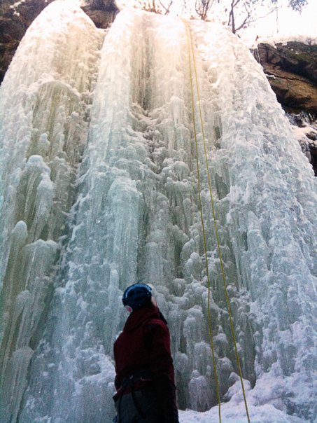

Liten is i väl skyddad miljö.
<div style="width: 355; float: right; margin-left: 10px; padding: 3px; border: solid 1px #cccccc;"> <googlemap version="0.9" lat="58.282064" lon="12.266235"> 58.266323, 12.264342, Gamla Slussen </googlemap> </div> Kör på valfri sida av älven ner mot slussområdet. Antingen på sydsidan via Nohab Industriområde och parkera på besöksparkeringen. Eller på andra sidan älven förbi fallområdet, kyrkan, kraftstationen och kolonilotterna. Parkera på första besöksparkeringen. Isen ligger nere i den gamla slussen och man kan med fördel sätta toppankare bakom den gula kiosken och fira ner till botten på slussen. Isen är synlig från bron över toppen på slussen.
Nere i slussen finns ett fall som är större än de andra. ca. 12 meter högt och 6-8 meter bred. Några få andra tappar finns nere i slussen och vid själva slussporten bildas också en is (Osäker på hur den är att klättra). I botten av slussen är det rätt blött och det finns risk att trampa igenom isen ner i geggan. Förmodligen rätt svårt att hålla fötterna torra när töperioden börjar...
OBS Området ägs och övervakas av sjöfartsverket/kanalverket och de har hittils inte jagat bort oss. Dock sker nedfirningen bakom kiosken genom en Rhododendronbuske som man bör va försiktig med. Längs med muren man får klättra på för att komma upp sitter en vattenledning bultad. Häng inte i denna!
Förmodligen är det smartast att sätta topprepet (eller inte) och fira ner på andra sidan på ett separat rep och när man är klar ta sig upp med jumar. Då är det ingen risk att man pajjar något eller irriterar någon.
Den största isen.
Kategori:Älvsborg
Kategori:Stub
Kategori:Is
Copyright (C) Permission is granted to copy, distribute and/or modify this document under the terms of the GNU Free Documentation License, Version 1.3